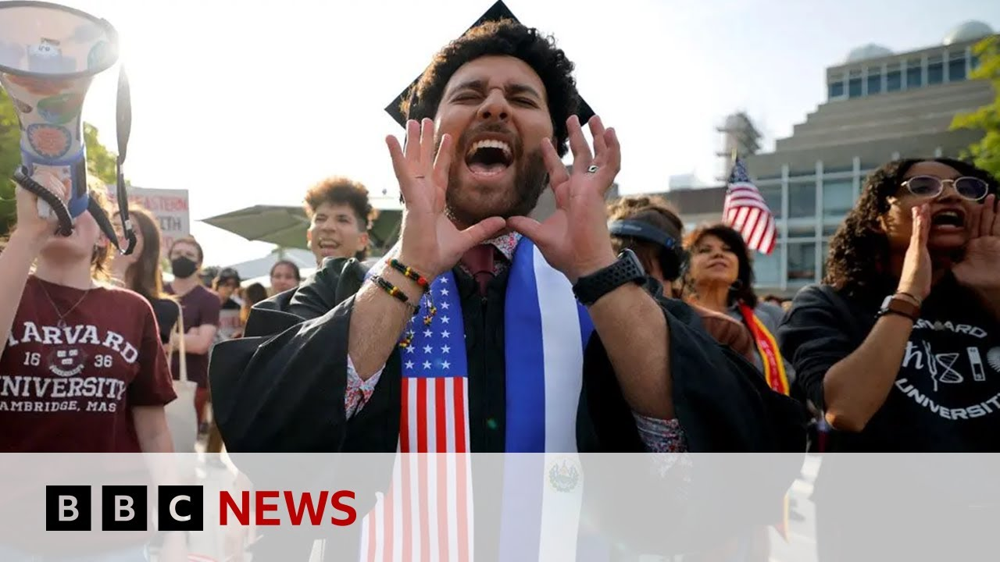

【美国暂停学生签证预约并计划加强社交媒体审查 | BBC新闻】
Summary: President Trump's administration has ordered embassies to pause student visa applications and expand social media vetting, revoking visas of some students in the US for pro-Palestinian protests, while reviewing Harvard grants.
摘要： 特朗普政府已下令使馆暂停学生签证申请并扩大社交媒体审查，撤销了部分在美支持巴勒斯坦抗议学生的签证，同时审查哈佛大学的资助。

⏱️ Estimated Reading Time: 3 min
President Trump's administration has ordered its embassies abroad to pause new applications for students and exchange visitor visas as it prepares to expand social media vetting of foreign students.
特朗普政府已下令其海外使馆暂停学生和交流访问者签证的新申请，同时准备扩大对外国学生的社交媒体审查。
Some students already in the United States have had their visas revoked for participating in pro Palestinian protests.
一些已在美国的学生因参加支持巴勒斯坦的抗议活动而被撤销签证。
Earlier, a senior White House official said the Trump administration would ask all federal agencies to review grants to Harvard University, a move which could see the cancellation of contracts worth about $100 million.
早些时候，一名白宫高级官员表示，特朗普政府将要求所有联邦机构审查对哈佛大学的资助，此举可能导致价值约1亿美元的合同被取消。
These students gave their view on the row between Harvard University and the Trump administration.
这些学生就哈佛大学与特朗普政府之间的争执发表了看法。
Take a listen.
请听。
I see that Harvard's really standing up against what he's doing and I'm very proud that they've they've really stood up against what he's doing and and standing up for what's right.
我看到哈佛大学确实在反对他的行为，我非常自豪他们确实站出来反对他的行为，并坚持正义。
Like if the idea is that we are under threat from for instance like foreign adversaries who are trying to increase their ability to compete with us.
比如，如果认为我们受到威胁，例如来自试图增强与我们竞争能力的外国对手。
I think this completely cuts the lifeblood of the ability of the United States to adequately respond to those things.
我认为这完全切断了美国充分应对这些问题的能力命脉。
Well, our North America Peter Bo North America correspondent Peter Bose has more.
我们的北美记者彼得·博斯有更多报道。
Well, this has come from the State Department and they haven't really fleshed out in much detail exactly what they want to do here or indeed achieve, but they've sent out a message to the embassies and consulates around the world, ordering this pause on new interviews for students overseas who want to seek a visa to come to the United States.
这一决定来自国务院，他们尚未详细说明具体要做什么或实现什么目标，但已向全球使领馆发出通知，要求暂停对希望申请赴美签证的海外学生的新面试。
And this is in preparation, they say, for these enhanced social media screenings.
他们表示，这是为加强社交媒体审查做准备。
And what they're not saying is for example what could flag up a problem with a particular applicant in terms of their social media posts.
但他们没有说明，例如哪些社交媒体帖子可能标记出特定申请人的问题。
It looks like US officials will be going through in past history the social media postings of of potential students.
看来美国官员将审查潜在学生过去的社交媒体帖子。
So we don't know specifically what they're looking for although we know it is in the areas of well potential let's say at its very worst those people who support terrorist organizations.
因此我们不知道他们具体在寻找什么，尽管我们知道最坏情况下可能是那些支持恐怖组织的人。
But what is of real concern to many students both overseas and many in academia here is that students will be screened for their political views.
但海外和本地学术界的许多学生真正担心的是，学生将因其政治观点受到审查。
And this of course comes with the backdrop of of many protests on US campuses over the Gaza.
而这当然是在美国校园多次针对加沙的抗议活动的背景下发生的。